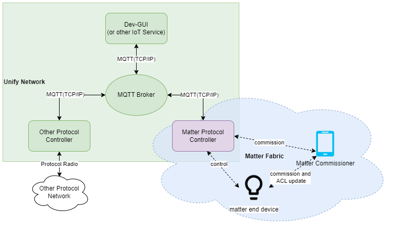

Unify Matter Protocol Controller Overview
The Unify Matter Protocol Controller(UMPC) is an application that makes Matter capable devices on a Matter fabric accessible on a Unify network. It does so by acting as a Protocol Controller in a Unify Framework.
In the Unify Framework, protocol controllers translate raw wireless application protocols such as Z-Wave and Zigbee into a common API called the Unify Controller Language (UCL). This enables IoT services to operate and monitor Z-Wave and Zigbee networks without being aware of the underlying wireless protocol.
In Unify, the transport between IoT services and Protocol Controllers is MQTT using JSON payloads for data representation.
On the Matter fabric, the Unify Matter Protocol Controller is a Matter controller that is able to control/operate on the Matter end devices.
The figure below illustrates the system architecture of the Unify Matter PC in both Unify and Matter system.

More Information about the Unify Framework can be found here
Trying Out the Unify Matter PC
To test the Unify Matter PC, a Raspberry Pi 4 is recommended. Install the latest release of the Unify SDK following the Unify Host SDK Getting Started Guide. Once the base Unify system is up and running, the Unify Matter PC may be installed on the Raspberry Pi 4.
The Silicon Labs Matter GitHub release contains ready-to-use binaries of the chip-tool and package of the Unify Matter PC.
Note that the Unify Host SDK uses Raspberry Pi OS as the base system as opposed to the standard Ubuntu system used for the Matter OpenThread Border Router image.
Unify Matter PC as a Protocol Controller
The Unify Matter PC is a Unify Protocol Controller that allows for control of Matter devices from a Unify framework/IoT Service. It translates Unify MQTT publish messages into the corresponding Matter cluster commands and attribute update reports back into Unify MQTT publish messages.
The Unify data model is largely based on the same data model as Matter, making the job of the Unify Matter PC relatively simple. There is almost a 1-1 relationship between them.
See the GitHub release notes for details on feature additions, bug fixes, and known issues.
Supported Clusters/Devices
The Unify Matter PC currently supports mapping the following clusters/device types.
Cluster |
|---|
OnOff |
Next Steps
For more information about the Unify SDK see Unify Host SDK Documentation